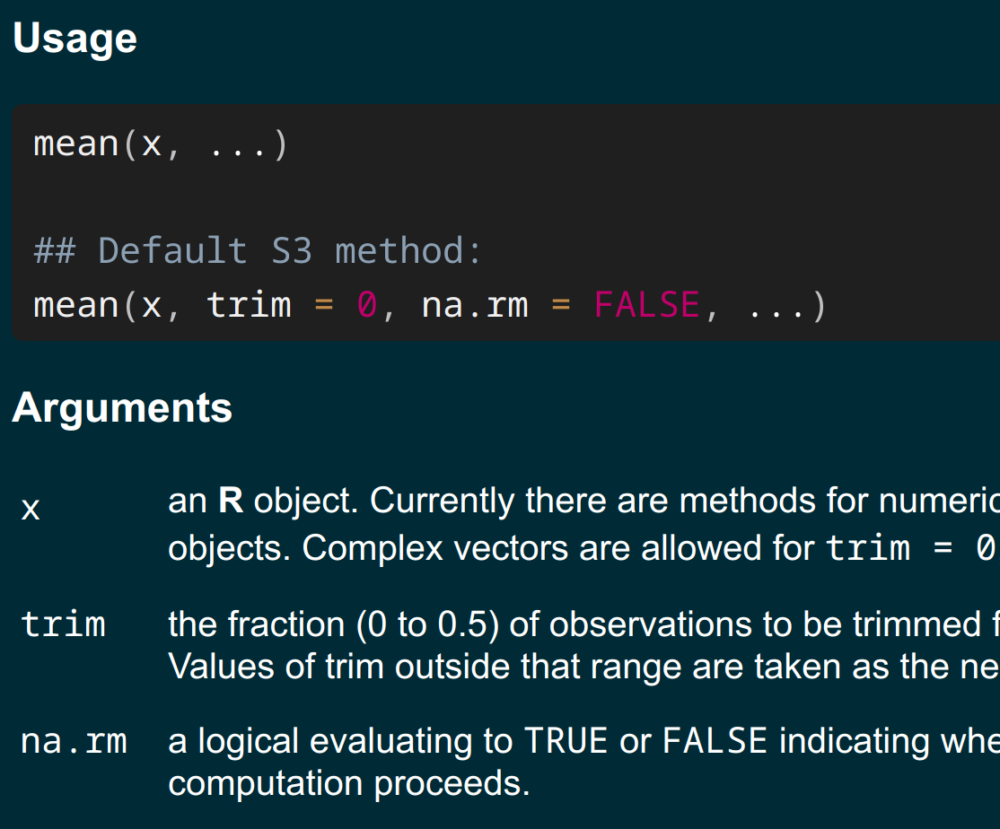
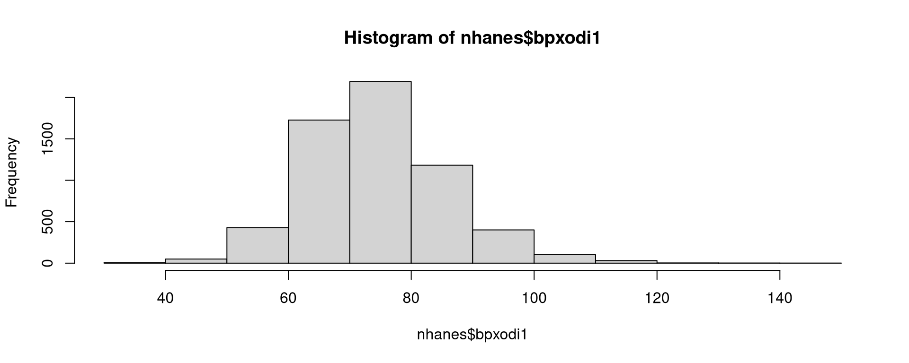
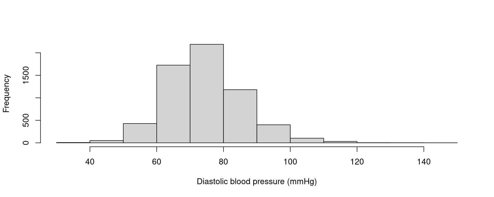
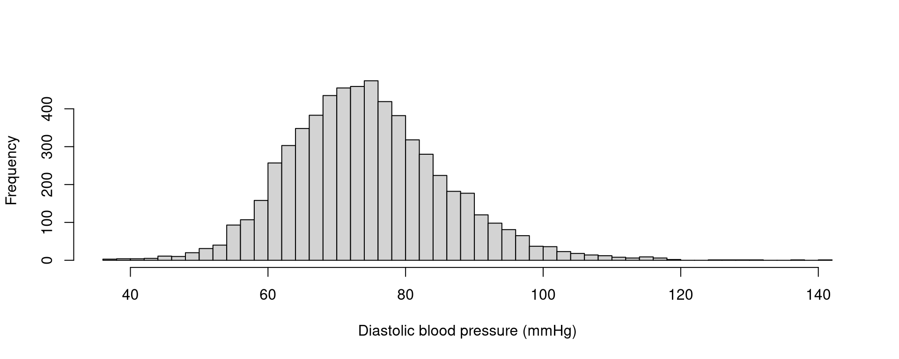
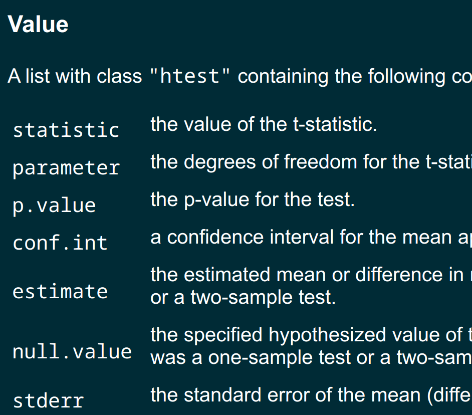
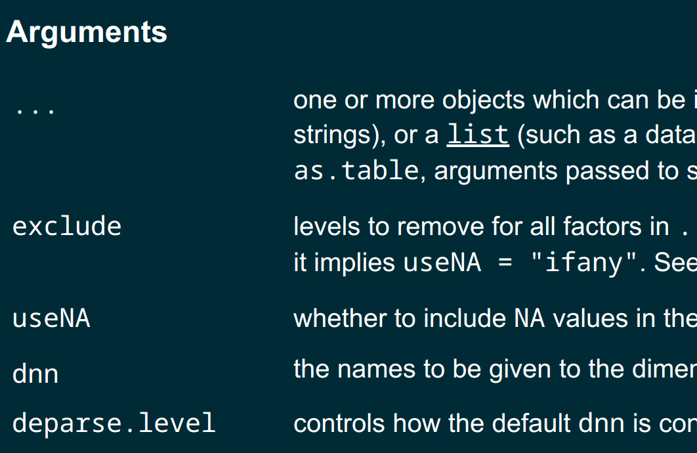

mean(nhanes$bpxodi1)
#| [1] NA
class(nhanes$bpxodi1)
#| [1] "integer"
head(nhanes$bpxodi1)
#| [1] 98 84 79 NA NA 72A Slower Introduction to R
UCSF Library
Friday, October 16, 2026
NA meanhelp() function:?:🤸
sqrt()x= when you use sqrt():x is known as an argument81 is the argument valuex is the argument namemean()
mean()na.rm argument is:a logical evaluating to TRUE or FALSE indicating whether NA values should be stripped before the computation proceeds.
na.rm is FALSE, suggesting that NA values will not be “stripped”🎉🎉🎉
TRUE must be in all capsna.rm=TRUE does not delete missing values from your datamean() ignore missing valuesna.rmCaution
The na.rm argument does not exist in every R function!
na.rm argumentlm(), does not have an na.rm argument<-=quantile() function, which you’ll use in Exercise 2 to find percentiles of continuous variables.na.rm argument?c()c()c() function combines values in a vectorc()c() to create a character vector:c()c() is very usefulc() is an argument to a functionprobs argument, I’ve used the c() function to create a vector containing 3 valuesc() for probs, when we want to use more than one probs value?summary()
main: the title at the topxlab: the label on the x axis
breaks argument
Tip
If a function argument needs to be in quotes, you can use single quotes or double quotes.
Across the exercises today, you’ll build an R script that will import the NHANES data and perform some univariate analysis. You’ll also practice going back and forth between the console and your script.
In the console or the script, write code for displaying a histogram of fasting glucose (lbxglu). Now do this again, specifying that you want to use 60 bins. Feel free to try other numbers of bins.
A common threshold for a health level of fasting glucose is 100 mg/dL. In the console or the script, add a red vertical line to your histogram at that threshold: abline(v=100,col='red').
In the script, type code for finding the mean level of fasting glucose. Add a comment above that code. Run that code.
In the script, type code for finding the 25th, 50th, and 75th percentiles of fasting glucose. Add a comment above that code. Run that code.
t.test() prints a summary report
table()
table()useNA argument can be used to control:whether to include NA values in the table
table() inside of prop.table()NA included:In the script from Exercise 2, write code for obtaining the percent of adults who have a history of smoking (smoking). Add a comment above that code. Run that code.
In the script, write code for obtaining the percent of adults who have a history of asthma (asthma). Add a comment above that code. Run that code.